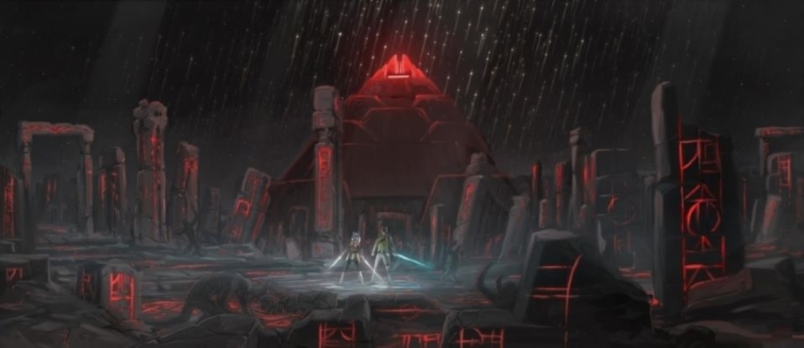

Opis: Malachor to planeta o niezwykle mrocznej przeszłości. Dawno temu była miejscem decydującej bitwy między Jedi a Sithami. W samym sercu planety znajduje się monumentalna piramida – Świątynia Sithów, w której przechowywana była superbroń zdolna do unicestwienia całych armii. Podczas bitwy broń została aktywowana, zamieniając wszystkich w okolicy – zarówno Jedi, jak i Sithów – w kamienne posągi.
Ruiny miasta otaczającego świątynię są pełne zamrożonych w czasie postaci, a całość przypomina ponure pole bitwy. Sama świątynia jest miejscem pełnym ciemnej energii i skrywającym sekrety starożytnych Sithów, ich alchemii oraz technologii.
Znaczenie: Malachor to mroczne ostrzeżenie przed skutkami obsesji na punkcie władzy i braku równowagi w Mocy. To miejsce pokazuje, że nawet najpotężniejsze bronie mogą prowadzić do samounicestwienia.
 ➡